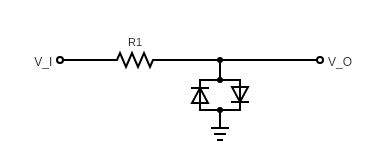
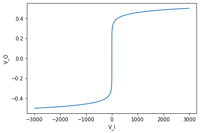
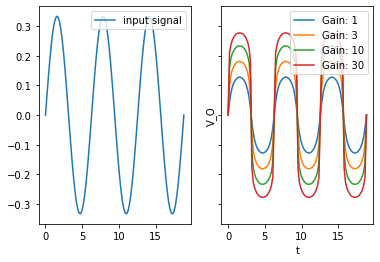
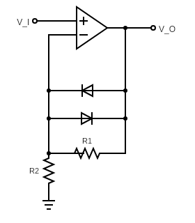
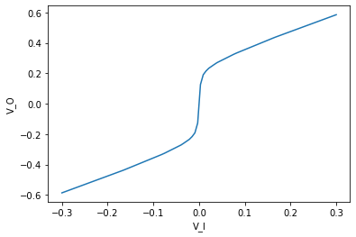
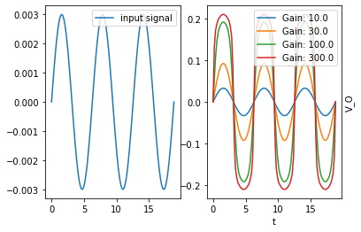

Hard vs Soft Clipping
In this post, we explore the difference between hard and soft clipping overdrive circuits.
Hard clipping (or shunt-clipping)
Hard clipping is found in a variety of popular over-drive pedals, including the ProCo Rat, MXR Distortion+, Boss DS-1&2, and the Klon Centaur. A hard clipping circuit introduces a double-diode shunt to ground after the op-amp gain stage, as follows:

Imagine the (amplified) input signal is \(V_I\), and we probe the voltage \(V_O\). In particular, we assume that the impedance at the output probe is much much higher than the resistance through any other part of the circuit.
Following Shockley’s equation, the current through the double-diode shunt is
\[I_{\operatorname{shunt}}(V_O)=I_S\big(e^{\frac{V_O}{K}}-e^{\frac{-V_O}{K}}\big),\]
Where \(I_S\) is the reverse bias saturation current, \(K=nV_T\), where \(V_T\) is the thermal voltage, and \(n\) is the ideality factor of the diode. This must match the current through the resistor, so
\[\frac{V_I-V_O}{R_1} = I_S\big(e^\frac{V_O}{K}-e^\frac{-V_O}{K}\big)\]
Thus, we get
\[V_I = R_1I_S\big(e^\frac{V_O}{K}-e^\frac{-V_O}{K}\big)+V_O.\]
Letting
\[f(V_O) = f_{R_1,I_S,K}(V_O):=R_1I_S\big(e^\frac{V_O}{K}-e^\frac{-V_O}{K}\big)+V_O,\]
we see that
\[V_O = f^{-1}(V_I).\]
When \(R_1\) represents a 1k transistor, and for silicon diodes, \(V_O\) depends on \(V_I\) as:

For large values of \(V_I\), we have approximately \(V_O\cong K\log(V_I),\) which flattens out very quickly (i.e. clips hard).
Passing a sine-wave (at different gain levels) through this shunt-clipping circuit results in the following clipped signal:

Soft clipping (or feedback-clipping)
Soft clipping is a second common clipping method for overdrive pedals, and is used in the Tube-Screamer, the Boss OD-1, and the Timmy, to name a few. It introduces a double-diode shunt in the feedback loop of the gain stage:

We make a few simplifying assumptions: - The op amp operates in linear (i.e., not saturated) mode, so the difference in voltage between the non-inverting (+) pin and the inverting (−) pin is negligibly small. In particular, the voltage at the (-) pin is approximately \(V_I\). - The input impedance through the non-inverting pin is much larger than any other resistance in the circuit.
Then the current through \(R_2\) to the ground must be \(V_I/R_2\), and this must match the combined current through both the diodes and \(R_1\). That is,
\[\frac{V_I}{R_2} =I_S\big(e^{\frac{V_O-V_I}{K}}-e^{\frac{V_I-V_O}{K}}\big) + \frac{V_O-V_I}{R_1},\]
where we model the diodes via Shockley’s equation. Rearranging terms, we get:
\[V_I\frac{R_1}{R_2} =R_1I_S\big(e^{\frac{V_O-V_I}{K}}-e^{\frac{V_I-V_O}{K}}\big) + (V_O-V_I),\]
That is,
\[V_I\frac{R_1}{R_2} = f_{R_1,I_S,K}(V_O-V_I).\]
Solving for \(V_O\), we get
\[V_O = f_{R_1,I_S,K}^{-1}\big(V_I\frac{R_1}{R_2}\big)+V_I.\]
In the special case that \(R_1=R_2\), this matches the hard-clipping function, except for the addition of the extra \(V_I\) summand, which softens the clipping:
\[V_O = \overset{\text{hard-clipping term}}{\overbrace{f^{-1}(V_I)}}+\overset{\text{softening term}}{\overbrace{V_I}}.\]
However, the gain when \(R_1=R_2\) just doubles the input voltage, and very little clipping occurs. However, choosing \(R_1=5\) and \(R_2=.1\) with silicon diodes, \(V_O\) depends on \(V_I\) as:

Note that this curve still grows steadily for all values of \(V_I\). More precisely, for very large values of \(V_I\), we have \(V_O\cong V_I\). To summarize, signals are amplified on the order of \(1+\frac{R1}{R2}\) until they reach a certain “clipping” threshold at which point they grow slowly but linearly - rather than fully flattening out.
Passing a sine-wave (at different gain levels) through this shunt-clipping circuit results in the following clipped signal:

These signals are clipped far more softly, remaining more sinusoidal than the hard clipped ones.